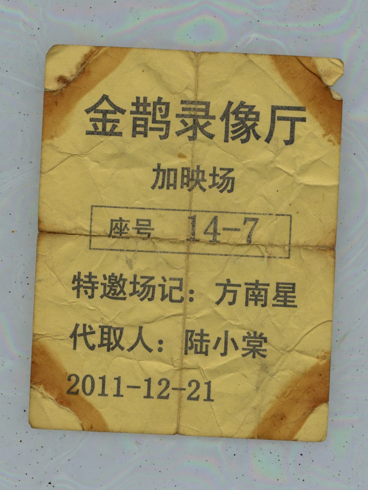

Unclaimed Stub

Tin-box scan. Face still prints the hall name, ExtraShow, seat 14-7.
Jinque Video Hall ExtraShow seat 14-7
Guest clerk: Fang Nanxing
Pickup: LuXiaotang (unclaimed)
Note: kin covering the shift. Opening the link counts as clocking in. After clock-in, before Credits appear, you may file LastTicket paperwork: refund, or sit through.
The Stub is earlier than the text. The text is this year. The Stub is 2011. You have not come yet. The name is already printed. Print is not prophecy. It is a vacancy.
A vacancy has to be filled. The person filling it thinks they came to pick up a ticket. The person picking up becomes the ticket.
Submit on the choice page. Choice page is not in the nav. The word is in the note on this page.
UNCLAIMED
Rust from the tin printed the paper edge. Edge is older than the middle. Middle is print. Print is colder than handwriting. A cold name looks official. No office issued this ticket. What issued it is a vacancy. Vacancy stamped UNCLAIMED. Stamp is red. Red things in internal files usually mean not finished.
If you curse LuXiaotang, she cannot hear. What hears is the seat. The seat does not care about cursing. The seat only cares whether someone is there. Someone there, it cools. Cool, you pass. People who pass may leave. People who leave are no longer called clerk. People still sitting are.
Fang Nanxing is printed very square. Square unlike a last-minute hand. Things that do not look last-minute make people feel it was planned. Planned is too big a word. Too big for a tin. The tin only holds a vacancy. Vacancy has to be filled. Filling used kin. Kin was filled by LuXiaotang. She filled it, then sent the text. The text is later than the print. Later things look like a request. A request cannot cover a name already printed.
LastTicket in the note is the choice-page search word. Do not split it.